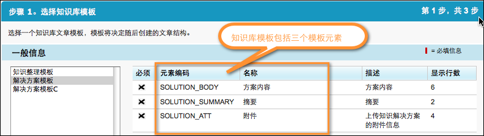
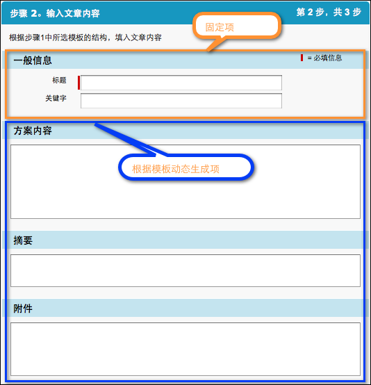

界面操作：
在步骤2中是进行内容的输入，包括固定项和动态项，固定项是指不受知识库模板限定的项，而动态项是根据在步骤1中选择的知识库模板动态生成的项，下面是一个示例；
步骤1选择模板：

步骤2输入项组成：其中的动态项是由步骤1的模板动态生成的；

一般信息：
一般信息：
文章标题：当前知识库文章的标题，该标题必须能简要概括当前文章的内容；
关键字：
能概括当前文章内容的关键字，关键字在搜索文章时会进行模糊匹配，所以需要尽量准确；
按钮操作：
上一步：返回到步骤1；
下一步：完成当前页面的信息填写后，进入到步骤3；
取消：取消新建操作，页面跳转到知识库首页；